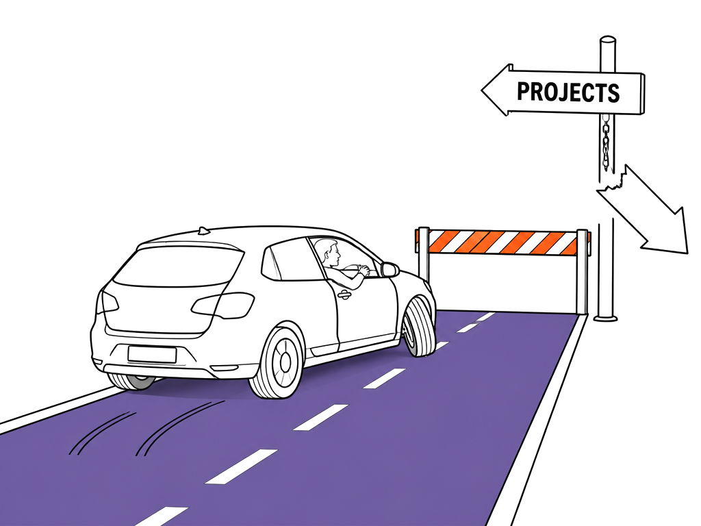

404
Wrong turn
This page doesn't exist. The work does.
You hit a broken or outdated link. Here's the way back to the case studies.

You hit a broken or outdated link. Here's the way back to the case studies.
